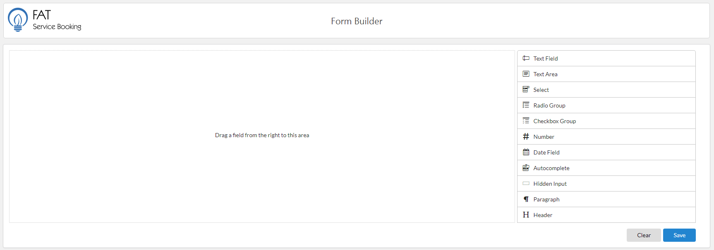
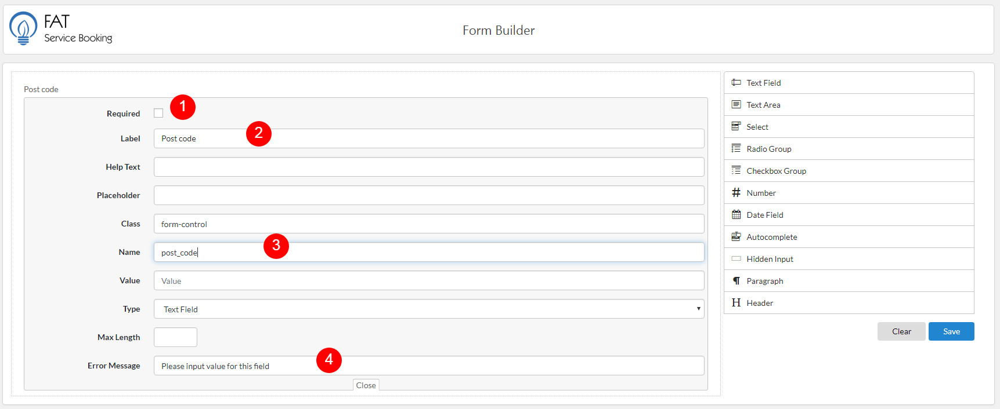

At default, FAT Service Booking provider default form booking. But in some case, if you want collect more customer's information, you can use booking form builder to customize booking form. To use booking form builder, please do follow:
Log into your WordPress admin panel.
Navigate to FAT Services Booking » Booking form builder.

Booking form builder.

Add field to bookking form.
1. Required: This is option that set required for this field. This mean, the client need filling value before create appointment
2. Label: This is lable of field what display above field.
3. Name: Each field has a name to distinguish from other fields.
4. Error Message: If you set required for this field, you need fill value for error message, this is message what display if client don't fill value .